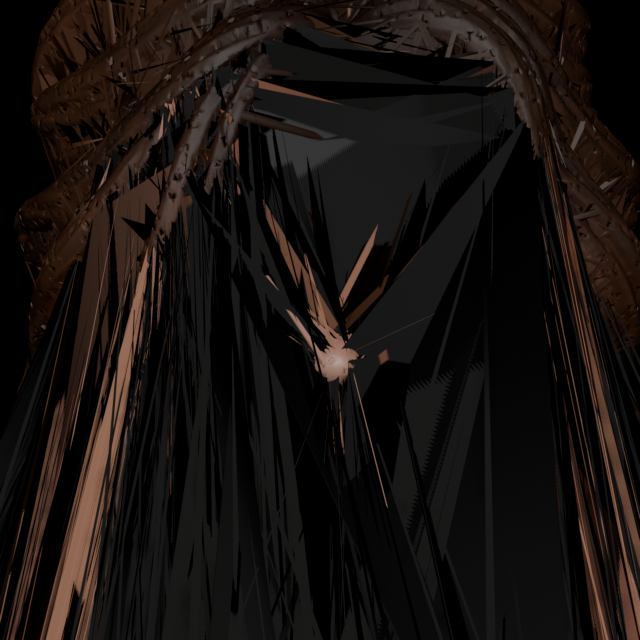
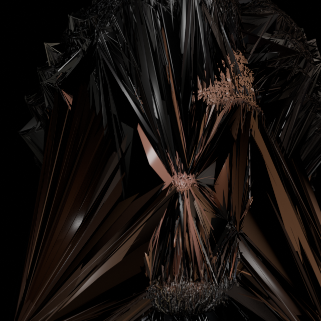
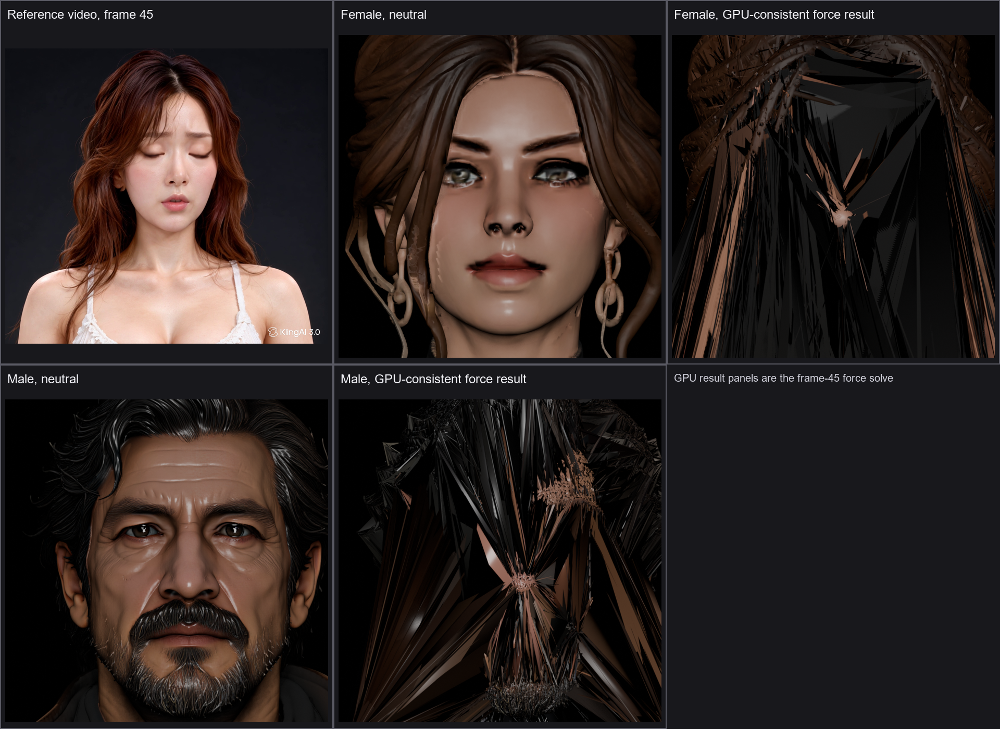
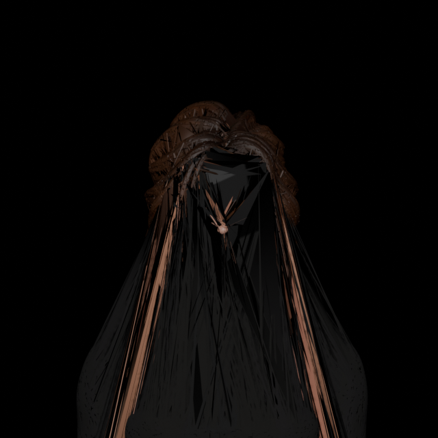
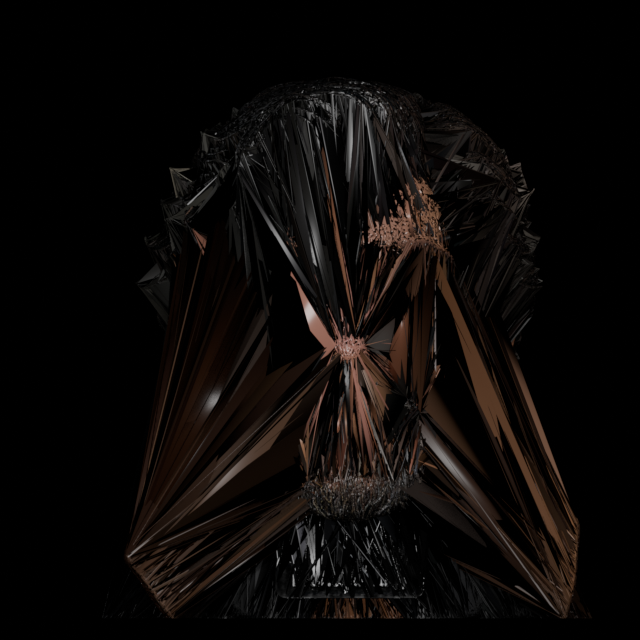

Result: FAILED at frame 45 geometry and force-balance gates. Input audit passes for 478/478 attachments on both characters. The GPU-consistent sensitivity gate passes at 0.3286% derivative-norm error with zero cross-island springs. Full 121-frame replay was not started.
The evaluated images below use the original textured GLBs and the GPU-consistent static inverse state. They are intentionally marked diagnostic: both contain severe visible deformation artifacts and are not accepted expressions.



The GPU-consistent rerun is intentionally shown as failed diagnostic output. It reproduces the numerical failure and visible spikes.


Fresh frame-45 comparison · Female fresh rerun metrics · Male fresh rerun metrics